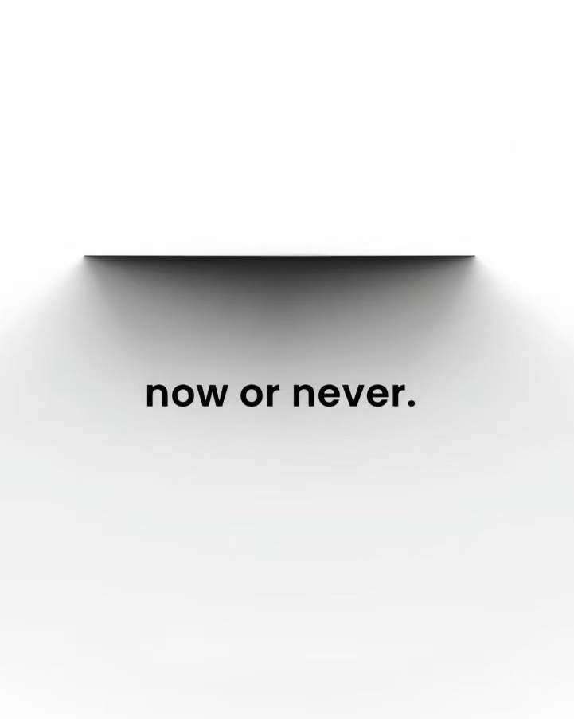
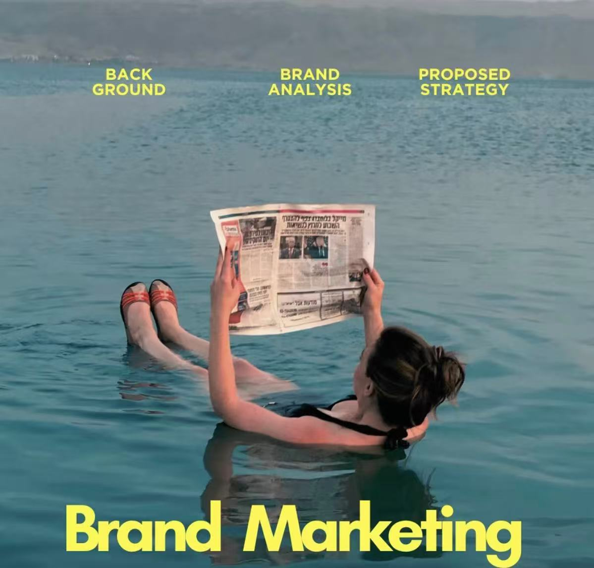

Sophia Sufei Chen
Aspiring Business Analyst & Marketing Planner | Final Year Business Studies Student at DCU | Accounting Assistant Intern | ACCA Student | Chinese & English
I am a final year Business Studies student at Dublin City University, specialising in Business Analytics and Marketing Planning. I am currently working as an Accounting Assistant Intern at PTB Accounting LTD, where I am gaining practical experience in accounting support, financial documentation, and day-to-day business operations.
In addition to my academic studies, I am also pursuing ACCA, which is helping me strengthen my knowledge of accounting, finance, and professional practice. My education and internship experience have helped me build a solid foundation in business analysis, commercial awareness, and problem-solving.
I am interested in opportunities in business analysis, marketing, finance support, and graduate roles where I can continue learning, contribute effectively, and grow in a professional environment.
Background

Academic and Professional Development
My background combines university study with practical experience in customer service, retail operations, and accounting support. These experiences have helped me develop strong communication, teamwork, organisation, and problem-solving skills in professional environments.
Through my studies, I have also developed growing confidence in business systems, analytics tools, and data-driven decision-making. I am especially interested in how businesses can improve performance through better use of information, digital tools, and customer understanding.
Core Skills
Analytics Tools
Excel
SQL
Python
Jamovi
Business Tools
PowerPoint
Word
Xero
Power BI
Professional Skills
Communication
Teamwork
Time Management
Problem-Solving
Accounting & Finance
Accounting Support
Financial Documentation
ACCA Learning
Commercial Awareness
Certs
I am committed to continuous online learning and professional self-development. Through the Kubicle platform, I have been strengthening my practical skills in business software and digital tools. These certificates reflect my willingness to keep improving my self skills, technical confidence, and workplace readiness beyond the classroom.
Kubicle Diploma — Excel
This certificate reflects my continued development in Excel and my interest in improving practical spreadsheet, reporting, and business analysis skills through independent online learning.
Kubicle Diploma — Word
This certificate supports my professional development in document preparation, communication, and workplace presentation, showing my commitment to building useful office and business support skills.
Kubicle Diploma — SQL
This certificate demonstrates my effort to strengthen database and query skills through structured online learning, supporting my longer-term development in analytics and data-focused work.
Portfolio
Selected Portfolio Work
This portfolio highlights three main projects that reflect different dimensions of my academic and professional development: marketing analysis, business intelligence, and quantitative risk analysis. Together, they show how I combine structured thinking, analytical tools, and professional presentation.
The projects demonstrate my experience with Excel, SQL-informed logic, Power BI dashboard storytelling, and quantitative analysis using financial and business data.

Media
A curated selection of video resources that support my learning in business analytics, ACCA, and professional English development.1
Business Analytics
This video gives a clear introduction to business analytics and helps explain how data can support better business decisions.
ACCA Learning
This resource supports my understanding of the ACCA pathway, its global value, and the professional opportunities it creates in finance and accounting.
English Learning
This English learning video helps me strengthen listening, vocabulary, and communication skills, which are important for study and professional growth.
Footnotes
These videos are included as learning resources to support my independent professional development outside the classroom.↩︎